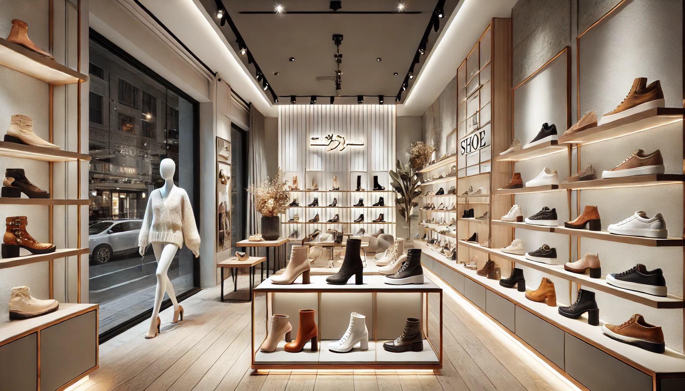

products
products
ქალთა ფეხსაცმელები
- კლასიკური ფეხსაცმელები: ელეგანტური, კომფორტული ფეხსაცმელები, რომლებიც ყველა შემთხვევისთვის შესაფერისია.
- ქუსლიანი სანდლები: მაღალი ქუსლის მოდელები, რომლებიც დიდად იხმარება საღამოებისთვის ან ფორმალური ღონისძიებებისთვის.
- სპორტული ფეხსაცმელი: ფეხსაცმელები აქტიური ცხოვრების სტილისთვის — იდეალური თვლებისა და ვარჯიშებისთვის.
- მოდური ჩექმები: ზამთრის სეზონისთვის მაღალი ხარისხის ჩექმები, რომლებიც მოდური და კომფორტულია.
მამაკაცის ფეხსაცმელები
- კლასიკური ტყავის ფეხსაცმელები: მრავალწლიანი სტილის და კომფორტის სიმბოლო.
- სპორტული ფეხსაცმელები: ყოველდღიური კომფორტი და აქტიური ცხოვრების სტილისთვის შესაფერისი ფეხსაცმელი.
- კომფორტული ჩექმები: სველი და ცივი ამინდებისთვის იდეალური ჩექმები.
- სნიკერები: მოდური და კომფორტული ფეხსაცმელები ყოველდღიურობისთვის.
ბავშვების ფეხსაცმელები
- სპორტული სანდლები: ფეხსაცმელი ბავშვებისთვის, რომლებსაც ძალიან მოსწონთ აქტიური თამაშები და გაშვება.
- სპორტული ფეხსაცმელები: დამზადებულია კომფორტული და რბილი მასალებით, რათა დაეხმაროს ბავშვის ფეხების განვითარების მხარდაჭერაში.
- ჩექმები: კომფორტული და თბილი ჩექმები ზამთრის პერიოდში.
სპორტული ფეხსაცმელები
- მთაში გასასვლელი ფეხსაცმელები: სალაშქრო ფეხსაცმელები, რომლებიც უზრუნველყოფს კომფორტს და უსაფრთხოებას მთებში, ბუნებაში და გრძელი სეირნობებისთვის.
- ვარჯიშის ფეხსაცმელები: სხვადასხვა ტიპის სპორტული ფეხსაცმელები, როგორიცაა სარბენი, ბოქსი, იოგა და სხვა.
აქსესუარები
- ფეხსაცმლის საწმენდი საშუალებები: პროდუკტები, რომლებიც ხელს უწყობს ფეხსაცმლის სისუფთავისა და კავშირების შენარჩუნებას.
- კომფორტის დამატებითი აქსესუარები: მასაჟორები, ქუსლების დაცვის საყელოები, სასიამოვნო ფეხსაცმლის ტყავები და ფორუმები.
